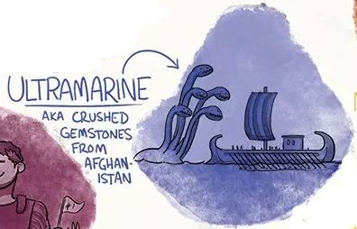
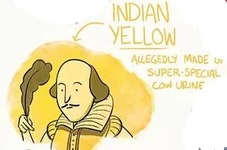

来看看过去的人都是怎么使用颜色吧 :)
炭黑 CARBON BLACK
基本上来自烧焦的各种材料。
早在1.4万年以前，西班牙人的祖先从植物和矿物中提取颜料， 最初人们在烧焦的食物/燃料中提取出炭黑，用于勾勒大概轮廓， 后续又从富含铁元素的矿土中提炼出红色和黄色。 因此许多早期颜料里都含有铁，或者说铁的氧化物， 也就是我们日常说的铁锈。
了解更多赭红 Red Ochre
含有铁的红土。
比起土棕更像铁锈的颜色了，因为里面的锈含量更多， 技术上说，里面几乎都赤铁矿。赭红就是很多岩画里 的那种红颜色。一些地区土壤呈现特有的红、紫色就 是因为土壤中铁及其氧化物含量较高。
了解更多白垩白 Chalk White
古埃及是四大文明古国之一，较早地形成了独有的象形文字系统和完善的政治系统。 因此埃及人在新石器时代晚期就知道制造黄铜，同时通过孔雀石等特殊石材提炼颜料。 埃及人画画时并不能用到很多颜色，大部分是亮色，能合法使用的范围也非常非常小。 对于埃及画家来说，颜色并不是唾手可得的。每种颜色都有其象征意义， 每幅画作都有其特定目的，通常是宗教/精神方面的。
石青 Azurite
埃及蓝 Egyptian Blue
埃及蓝 Egyptian Blue
4000多年前，埃及人终于发明了第一种人工颜料， 在古代地中海地区应用广泛。但在罗马帝国陷落后， 人们就忘记了如何制作这种颜料。而在19世纪早期， 一些考古学家在庞贝古城废墟中发现了一壶“淡蓝色”， 因此也被叫做“庞贝蓝”，但在当时他们也不知道这是什么， 有人用了50年研究、还原它的配方， 直到20世纪初才被一家巴黎公司所利用，得以重见天日。 埃及蓝的形成温度在800~900℃， 是在正常的固态煅烧中或者使用碱金属化合物作为助熔剂得到的。 法国卢浮宫研究实验室的研究人员曾用X光吸收精细结构分析揭示 出埃及蓝除了肉眼可见的蓝色还隐隐散出红外光。
了解更多古希腊是西方文明的主要源头之一，西方有记载的文学、科技、 艺术都是从古代希腊开始的；古罗马文化早期在自身的传统上 受伊特鲁里亚、希腊文化的影响，吸收其精华并融合而成。公元 前3世纪以后，罗马成为地中海地区的强国，其文化亦高度发展。 因而在这个时期，更多的颜色被刻意地调配，出现了各种使用动 植物、矿石合成的颜料。
棕褐 Sepia
铜绿Verdigris，又称希腊绿
朱红Vermillion
朱红Vermillion
由粉状朱砂制成，主要的化学成为是硫化汞，含有剧毒。这种颜料很稀罕也很珍贵， 罗马帝国甚至对他的价格进行了法律规定，以至于没人能买得起。偶尔会用在化妆品中，效果你懂的。
了解更多泰尔红紫 Tyrian Purple

深蓝色，群青 Ultramarine
深蓝色，群青 Ultramarine
天青石做成的蓝色颜料，这个名字来源于拉丁文ultramarinus， 字面意思是“超越海洋”，因为在14世纪和15世纪期间， 意大利贸易商从阿富汗的矿场将颜料进口到欧洲。天然群青 是手工研磨的最难的颜料，在15世纪通过对提取技术进行了 改良替代了纯粹的手工研磨，但仍然需要将材料与熔化的蜡， 树脂和油混合，将所得到的物质包裹在布中，然后将其捏合 在稀碱液中。蓝色的颗粒收集在锅底，而杂质和无色的晶体 仍然存在。这个过程至少执行三次，每次连续的提取都会产 生一些质量较低的材料。群青是文艺复兴时期画家使用的最 好，最贵的蓝色。有时候你可以通过画里有多少蓝色来判断 这个画的主人多富有。
阅读更多那不勒斯黄Naples Yellow
那不勒斯黄Naples Yellow
另一种含铅的颜料，相关的矿物颜料bindthalite可追溯到公元前16世纪。 那不勒斯黄被用在很多17世纪绘画大师的画作中，画阳光很棒， 也能毒死人。现代则使用了毒性更低的原料来制作。
阅读更多钴蓝Smalt
钴蓝Smalt
作为颜料，钴蓝的主色（MASS TONE） 和群青蓝（ULTRAMARINE BLUE）相似， 但是它的底色调和偏紫的群青底色调相 比显得偏绿。它是画家的标准颜料之一， 在15世纪到17世纪的欧洲绘画中很常见。
阅读更多
印度黄Indian Yellow
印度黄Indian Yellow
印度黄色在阳光下特别鲜艳。这可能是荷兰艺术家首先使用的。 在十八世纪末之前，欧洲的艺术家普遍使用它。印度黄色的起 源一直被认为是一个谜。据说在一座默默无闻的印度村庄， 村民们只用芒果叶子喂牛，使得牛营养不良，于是尿明亮 地闪耀着黄色。人们就把这些尿收集起来，弄干，压成饼 状，最终会有一部分到达欧洲。
阅读更多靛色Indigo
靛色Indigo
靛蓝实际上是一种植物，5000年前在印度被发现， 到公元前7世纪，人们开始使用这种植物作为染料。 1289年，威尼斯商人旅行家记录了这种颜料； 但直到1640年，欧洲人才开始使用这种颜料，英法 两国随后开始鼓励在西印度群岛的殖民地进行靛蓝 种植。
阅读更多藤黄Gamboge
木乃伊棕Mummy Brown
木乃伊棕Mummy Brown
地表木乃伊(还混有某些其他物质)......这个颜色一度蛮受欢迎， 但逐渐被时光淘汰掉，人们不再制作这个颜料的部分原因是制造 商的木乃伊不够用了，还有一部分可能是是画家们意识到他们是 在用人画画……
阅读更多普鲁士蓝Prussian Blue
普鲁士蓝Prussian Blue
首个完全人工制造的染料，首次于1706年在柏林合成， 几十年之后只供应给艺术家。还记得群青色贵得要死吗？ 普鲁士蓝就不是。绘画作品在18世纪忽然就都变得更蓝了， 就是因为普鲁士蓝。
阅读更多

铬黄Chrome Yellow
铬黄Chrome Yellow
在法国化学家Louis Vauquelin于1797年发现了新元素铬后， 在实验室合成了铬酸铅，并将其作为色素在十九世纪后十年开始使用。 这种黄色颜料比其恶心的印度黄显得更加明亮，价格却更为便宜。 但其中含有的铅很容易进入人体，导致神经系统紊乱等一系列疾病。 喜爱铬黄和厚涂的梵高之所以长期受到精神疾病的困扰， 很有可能离不开铬黄的“贡献”。
阅读更多法国群青French Ultramarine
法国群青French Ultramarine
1787年左右， Goethe观察到意大利巴勒莫附近石灰窑壁上的蓝色沉积物。 他意识到使用这些玻璃质矿物作为装饰应用中青金石的替代品。1814, Tassaert 也发现这种自发形成的蓝色化合物，终于，群青不再使用 碾碎的宝石了。法国群青堪称颜色化学史上的圣杯了——一款不是由阿 富汗宝石粉末制成的群青。
阅读更多谢勒绿Scheele’s Green
谢勒绿Scheele’s Green
这种颜色在19世纪相当流行，人人都爱谢勒绿。 从墙纸、衣服、报纸、玩具、蜡烛..你能想到 的一切生活用品都有这种颜色在使用，然而这 种颜料的主要成分是砷，并且极易挥发，于是 就有了儿童死于绿色蜡烛，妇女穿绿裙子就生 病，还有未经证实的传闻说拿破仑是因为长久 靠近绿色壁纸慢性中毒而身亡。
阅读更多翡翠绿Emerald Green
苯胺紫Mauveine
洋红Magenta

合成靛蓝Synthetic Indigo
合成靛蓝Synthetic Indigo
还记得靛蓝吗？东印度公司的重要商品的靛色？ 1882年一位名叫阿道夫·冯·拜尔(Adolf Von Baeyer)的化学家在 他的实验室里合成了这个颜料。1905年他获得了诺贝尔奖， “通过他对有机染料和水性芳族化合物的研究以表彰他在提高有机 化学和化学工业方面的贡献”。我可以肯定，这个诺贝尔奖不是因 为这个毁掉了东印度公司在靛色颜料上的垄断而颁发的。
阅读更多